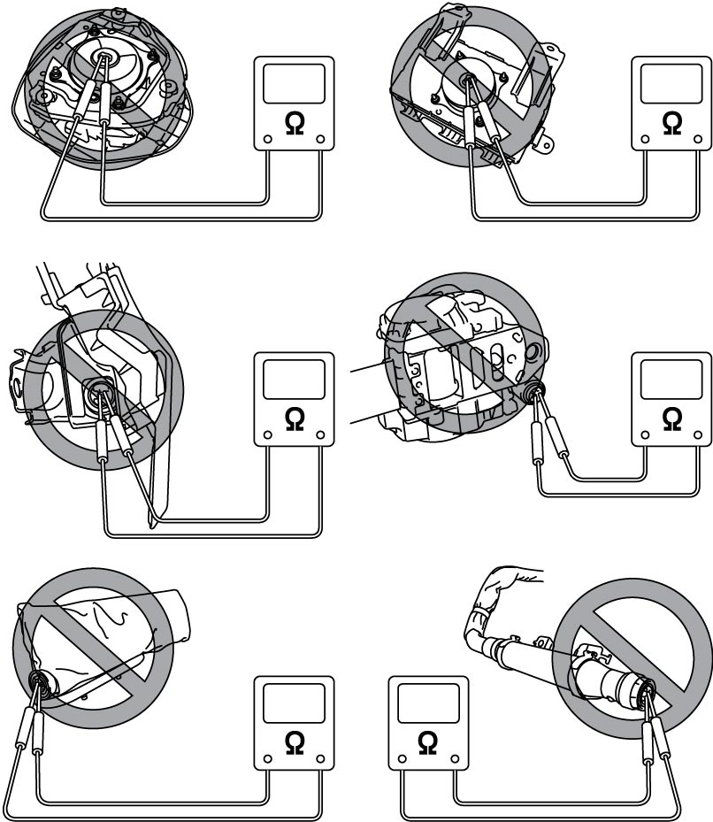
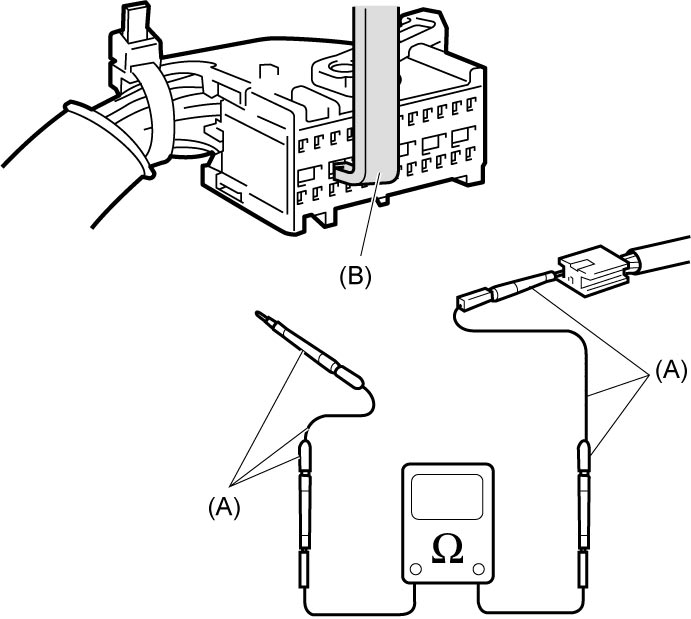
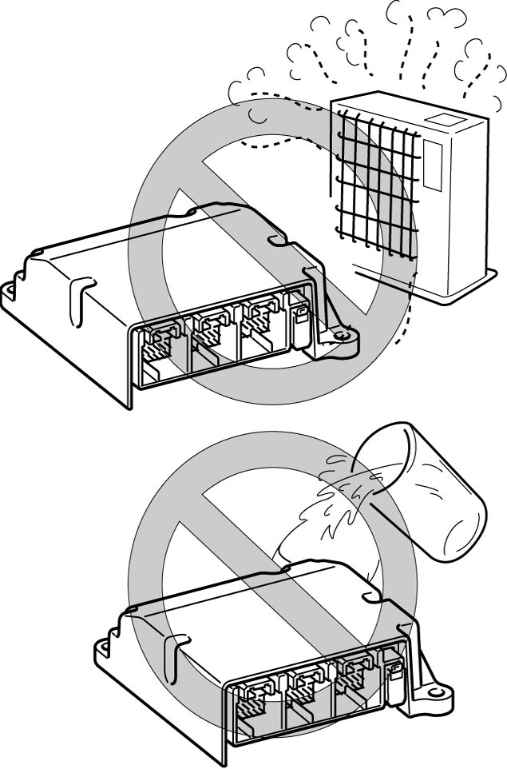
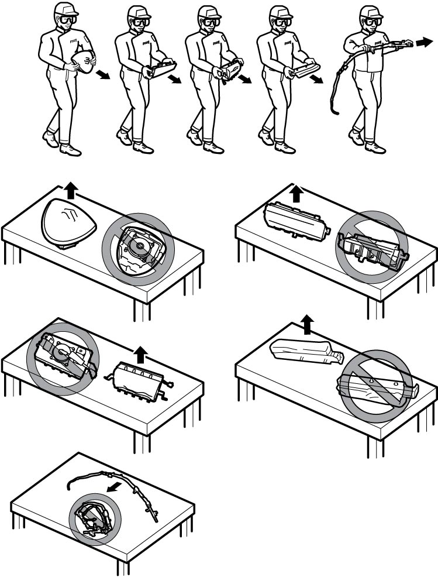
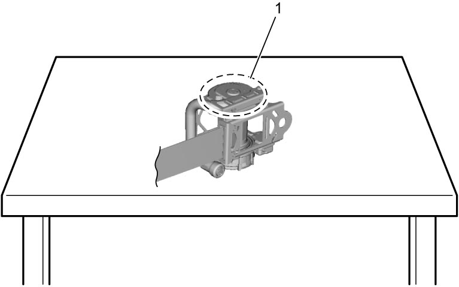
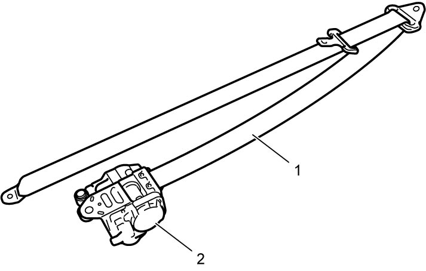
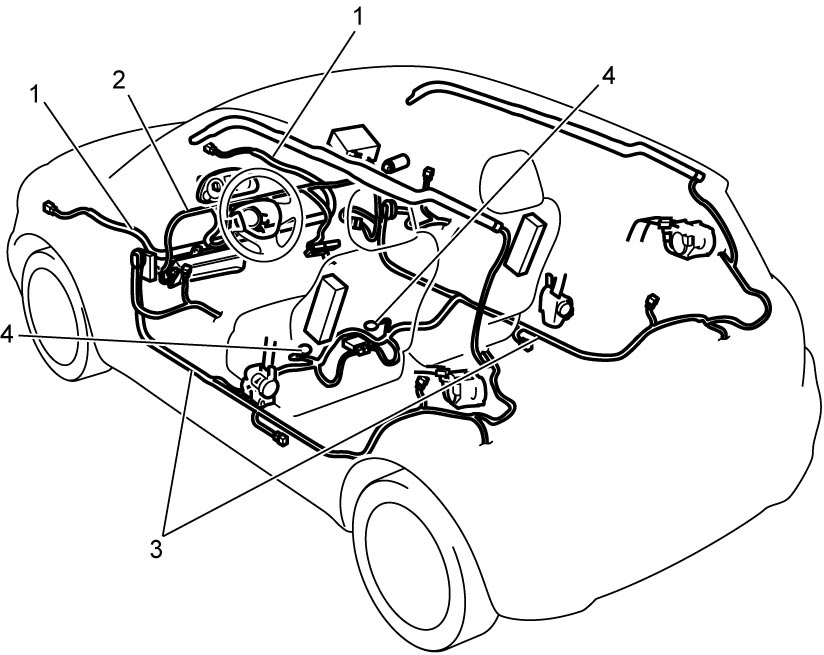

8B
| Precautions for Handling and Storage of Air Bag System Components |
Measuring the resistance of any air bag (inflator) module or any seat belt pretensioner with a tester is dangerous, as the electric current from the tester may trigger the air bag or pretensioner.
Never measure the resistance of an air bag (inflator) module or seat belt pretensioner.

 "Expand image")
When checking each wiring harness, use special tools (A) and (B) referring to Use of Special Tools.

 "Expand image")
SDM
•If the SDM is not rigidly attached to the vehicle, it could accidentally cause the air bags to deploy when the air bag system is powered, possibly causing personal injury.
Always check that the SDM is rigidly attached to the vehicle before supplying power to the air bag system.
•The SDM that has been involved in an accident severe enough to cause deployment of air bags is not guaranteed to provide its original performance.
Never use an SDM that has been involved in an air bag deployment accident. Refer to Air Bag Diagnostic System Check for the SDM check procedure.
Always check that the SDM is rigidly attached to the vehicle before supplying power to the air bag system.
•The SDM that has been involved in an accident severe enough to cause deployment of air bags is not guaranteed to provide its original performance.
Never use an SDM that has been involved in an air bag deployment accident. Refer to Air Bag Diagnostic System Check for the SDM check procedure.
•Never disassemble SDM
•When storing SDM, select a place where neither high temperature nor high humidity is anticipated and oil, water and dust are kept off.
•When storing SDM, select a place where neither high temperature nor high humidity is anticipated and oil, water and dust are kept off.

 "Expand image")
•If SDM installation part of floor is damaged, repair it completely before reinstallation.
•All SDM and mounting bracket fasteners must be carefully torqued and the arrow on SDM must point toward the front of the vehicle to ensure proper operation of the air bag system.
Live (Undeployed) Air Bag (Inflator) Module
Special care is necessary when handling and storing live (undeployed) air bag (inflator) modules. Accidental deployment of air bag (inflator) module could throw itself or objects around it in the air.

 "Expand image")
Live (Inactivated) Seat Belt Pretensioner
Failure to take proper precautions when handling and storing a live (non-activated) seat belt pretensioner can result in personal injury due to accidental activation of the pretensioner.
•Handle or store a live seat belt pretensioner in a place with an ambient temperature below 65 °C (150 °F), without high humidity and away from electric noise sources.
•Never carry a live seat belt pretensioner by holding the belt webbing.
•When placing a live seat belt pretensioner on a workbench or other flat surface, check that the pretensioner’s exhaust hole side faces (1) upward.
•Do not put anything on the exhaust hole side of a live seat belt pretensioner. Also avoid placing one live seat belt pretensioner on top of another.

•Never carry a live seat belt pretensioner by holding the belt webbing.
•When placing a live seat belt pretensioner on a workbench or other flat surface, check that the pretensioner’s exhaust hole side faces (1) upward.
•Do not put anything on the exhaust hole side of a live seat belt pretensioner. Also avoid placing one live seat belt pretensioner on top of another.

 "Expand image")
Special care is necessary when handling and storing a live (inactivated) pretensioner. Accidental activation of pretensioner will cause high pressure gas to blow off from the exhaust hole and retract the webbing (1) quickly into the retractor assembly (2). These actions may throw the pretensioner itself or objects around it in the air.

 "Expand image")
Deployed Air Bag (Inflator) Module and Activated Seat Belt Pretensioner
Air Bag Wire Harness and Connector
Air bag wire harness is included in main harness (1), instrument panel harness (2) and floor harness (3). Air bag wire harness can be identified easily as the connector side wire harness is covered with a yellow protection tube or tape. Be careful when handling it.
•If damaged harness, connector or terminal is found on an air bag wire harness, replace the harness.
•When installing the air bag wire harness, be careful so that it is not caught or does not interfere with other parts.
•Check that air bag system grounding point (4) is clean and ground terminal is securely fastened for optimum metal-to-metal contact. Poor grounding can cause intermittent problems that are difficult to diagnose.
•When installing the air bag wire harness, be careful so that it is not caught or does not interfere with other parts.
•Check that air bag system grounding point (4) is clean and ground terminal is securely fastened for optimum metal-to-metal contact. Poor grounding can cause intermittent problems that are difficult to diagnose.

 "Expand image")